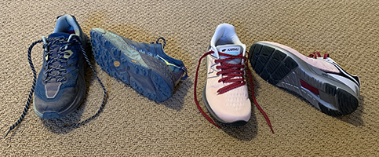

How to Prepare for a Run
By Rebecca Green
Step 1: Check the Weather
These factors will affect your choice of route, clothing, distance, and pace:
- Temperature
- Wind
- Humidity
- Cloud cover
- Air quality
When checking the air-quality index (AQI), it is helpful to know what pollutants are in the air. If you are sensitive to certain allergens, then high pollen or dust counts may affect your run.
Avoid running in conditions with high counts of PM2.5 and PM10 pollutants. These are small particles that can damage your lungs.


image from AccuWeather app
Step 2: Pick a Route
Decide how far or how long you want to run, then select a route that supports your goal. Other considerations include:
Weather
- Hot? Choose a route with shade.
- Windy? Select an out-and-back route so you can start running into the wind and finish with the wind at your back.
Terrain
- Need to condition yourself for elevation gain? Choose a route with hills.
- Need to run speed intervals? Find a synthetic track.
Personal Preferences
- Get bored with repetion? Map out a loop.
- Want a break from the noise of the city? Find an open space park.

image from Nike Run Club app
Step 3: Select Your Attire
Select your clothing based on the weather and trail surface.
Hot Weather
- Hat for sun protection
- Tank top or short sleeve shirt
- Shorts
- Lightweight synthetic socks
Cold Weather
- Beanie or warm headband
- Long sleeve insulated shirt
- Tights
- Heavy synthetic/wool blend socks
Trail Surface
- Trail shoes with grippy tread for dirt or rocky paths
- Road shoes with traditional tread for paved paths

Trail shoes (left) and road shoes (right)

Left: hot weather ensemble
Right: cold weather ensemble
If the UV Index is above 3, be sure to apply sunscreen with an SPF of 30 or greater to any exposed skin.
Step 4: Gather Support Tools
Select your support tools based on the weather, duration of your run, and personal preferences.
Weather: If it's sunny, you'll want dark tinted sunglasses. If it's cloudy, lighter tint sunglasses will reduce glare without limiting your vision.
Duration: For longer runs, you may need a hydration pack. This is especially important on hot days or if your route does not include a water source.
Personal Preferences: Wear a digital sport watch to track your time, distance, and/or pace. Bring headphones if you prefer listening to a guided run, podcast, or music.

image of sunglasses, sport watch, ear buds, and hydration pack
Step 5: Warm Up
Walk for 5-10 minutes to warm up your muscles and joints. Then complete a gentle stretching routine that includes the major muscle groups:
- Arms
- Legs (upper and lower)
- Core
- Back
You're ready to run! Remember to start easy, then slowly increase your effort over the course of the run.
It is important to stretch AFTER you finish running. Visit this article by Medical News Today to learn some of "the best stretches for runners."